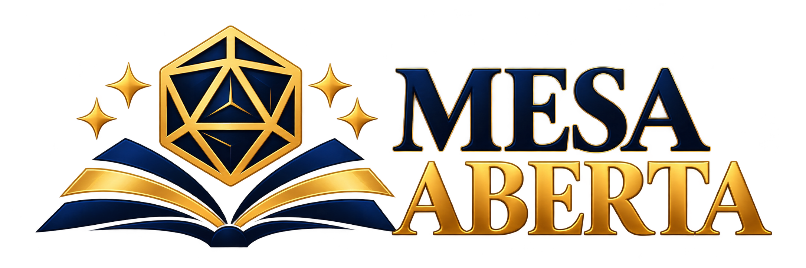

Criatividade
Incentivamos a imaginação, a expressão pessoal e o pensamento criativo por meio de histórias construídas coletivamente.

ParticipeHistórias que aproximam...
Boas-vindas à Mesa Aberta, uma ONG que traz o fantástico para a vida real! Venha conhecer o incrível universo do RPG de mesa, onde cada aventura começa com uma história compartilhada.
A Mesa Aberta é uma ONG que acredita que o RPG de mesa pode ser utilizado como ferramenta de transformação social. Promovemos o acesso ao hobby em todo o Brasil, criando espaços seguros, acolhedores e diversos, onde pessoas podem se expressar, criar e construir histórias juntas.
Saiba mais →Incentivamos a imaginação, a expressão pessoal e o pensamento criativo por meio de histórias construídas coletivamente.
Acreditamos que todos merecem um lugar à mesa, independentemente de sua experiência com RPG.
Aproximamos pessoas por meio de aventuras compartilhadas, incentivando amizades e colaboração.